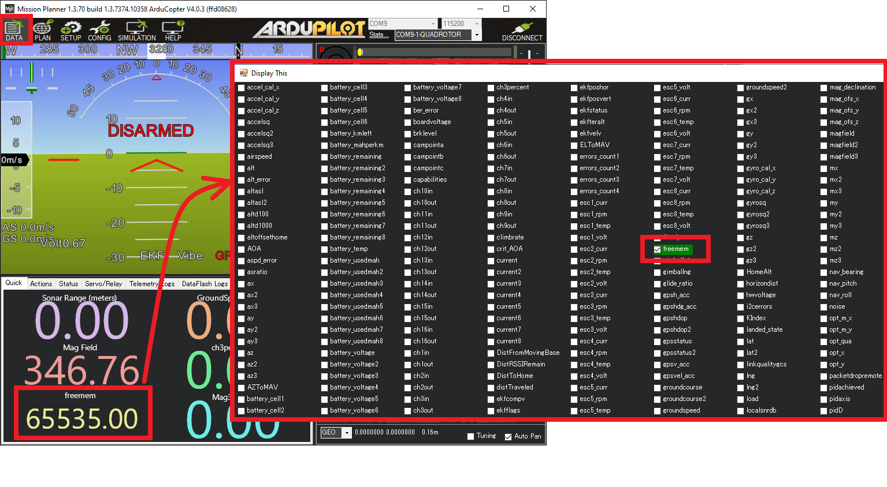
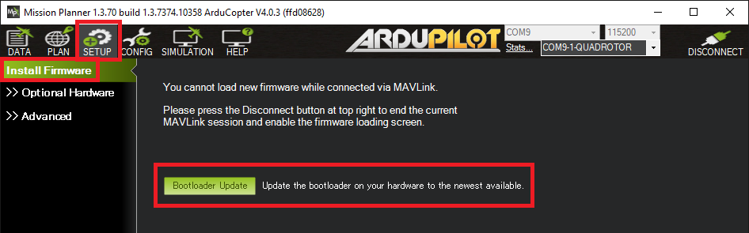

Updating the Bootloader¶
A Bootloader is a small piece of code that runs (normally just for a few seconds) when an autopilot is powered on. One of the bootloader’s primary responsibilities is to allow easy upgrading of the main firmware (i.e. ArduPilot)
Nearly all autopilots ship with a bootloader pre-installed and most users will never need to upgrade it but there are some advantages to upgrading to the latest ArduPilot specific bootloader:
Bug fixes like the “Parameter Reset” issue fix included with Copter-4.0.4, Plane-4.0.6
The COM port name may be more recognisable. For example it may include “ArduPilot”
Warning
Updating the bootloader can potentially “brick” the board (i.e. make it unresponsive and unable to upload new firmwares). Be careful not to power down the autopilot during the update process
Where can I download the latest bootloader?¶
The ArduPilot specific bootloader is included within the ArduPilot firmware but it lies dormant by default. A special command must be sent to the main ArduPilot firmware to install the new bootloader.
{kind=link}
Upgrading using Mission Planner¶
Install a recent version of ArduPilot to the autopilot (with existing ArduPilot firmware, without existing ArduPilot firmware)
Connect and check that the autopilot has at least 20k of free memory. Open the Data screen’s Quick tab, double click on any entry and the select “freemem”.
Open the Setup >> Install Firmware page and press the “Bootloader Update” button
Reboot the autopilot
{kind=link}
{kind=link}
Upgrading using QGC¶
The process is similar to using Mission Planner (see above) except the “Flash ChibiOS Bootloader” button is found on the Configuration (Gear icon), Firmware page
{kind=link}
Upgrading with MAVProxy¶
In the MAVProxy terminal, type, “flashbootloader”
Extra Information¶
Developer specific information on Bootloaders can be found here
The source code for the bootloaders can be found in Tools/AP_Bootloader
Pre-compiled binaries can be found on firmware.ardupilot.org/Tools/Bootloaders